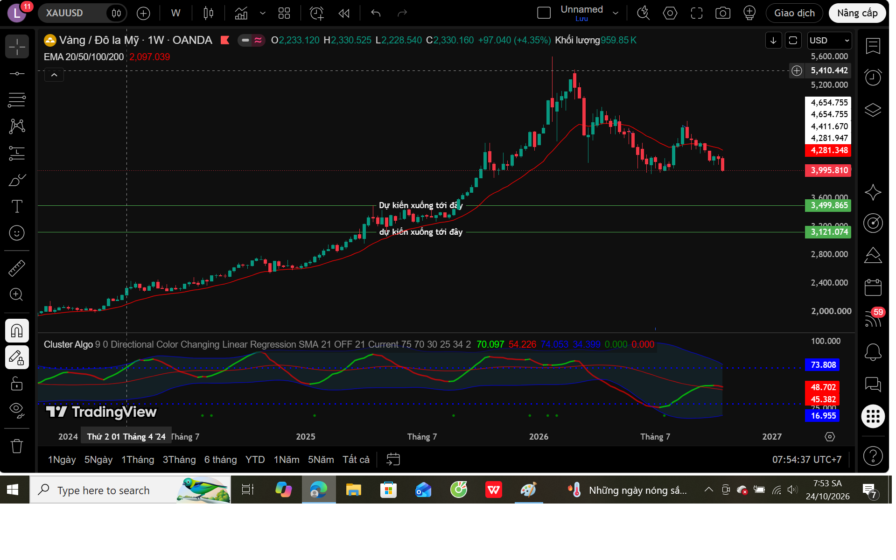
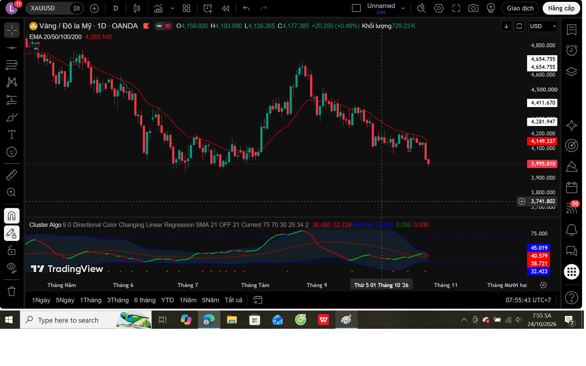
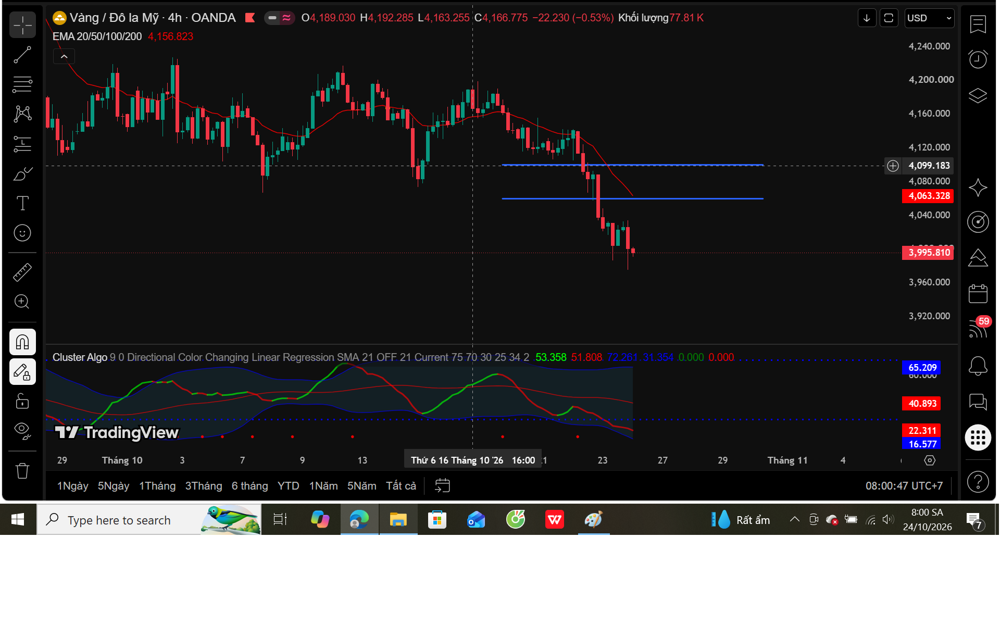
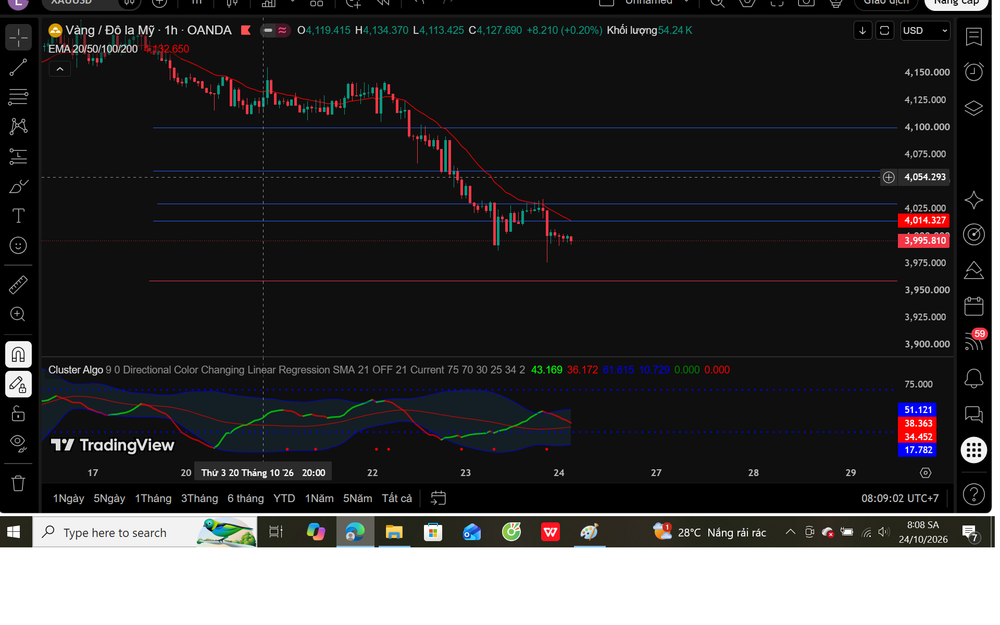

PHÂN TÍCH THỊ TRƯỜNG GOLD TUẦN 26–30/10/2026: NÊN BUY, SELL HAY ĐỨNG NGOÀI?
Nhận định tổng quan
Theo biểu đồ ghi nhận ngày 24/10/2026, GOLD (XAUUSD) đang dao động quanh vùng 3.996 USD/oz. Sau giai đoạn tăng mạnh, giá vàng đã xuất hiện những dấu hiệu suy yếu, đặc biệt khi một số đường hỗ trợ xu hướng tăng bị phá vỡ.
Quan điểm cá nhân của tôi là ưu tiên quan sát kịch bản giảm hoặc hồi phục kỹ thuật trong tuần 26–30/10/2026, thay vì vội vàng bắt đáy. Xu hướng giảm không có nghĩa phải SELL ngay; cần chờ Price Action xác nhận.
1. Phân tích khung tuần – W1

Trên W1, GOLD đã trải qua giai đoạn tăng giá mạnh trước khi xuất hiện áp lực bán đáng kể. Giá đang kiểm tra và có dấu hiệu phá đường hỗ trợ xu hướng tăng được đánh dấu trên biểu đồ. Đây là cảnh báo về khả năng điều chỉnh sâu hơn, nhưng chưa đủ khẳng định xu hướng giảm dài hạn.
Hai khu vực khoảng 3.500 và 3.121 USD/oz là những mốc tham khảo để nghiên cứu trong kịch bản giảm dài hơn; không phải mục tiêu đã được xác nhận cho tuần tới.
2. Phân tích khung ngày – D1

Trên D1, giá đã phá xuống dưới đường hỗ trợ tăng được hình thành trước đó. Các nhịp hồi gần đây chưa cho thấy bên mua đủ sức lấy lại những vùng giá quan trọng.
Khi hỗ trợ bị phá vỡ, cần chú ý khả năng giá hồi lên kiểm tra lại vùng vừa phá. Nếu hồi không vượt kháng cự và tiếp tục tạo đỉnh thấp hơn, kịch bản giảm được củng cố.
3. Phân tích khung H4

H4 thể hiện cấu trúc giảm rõ hơn với các đỉnh thấp dần, đáy thấp dần. Giá đã có nhịp giảm mạnh xuống quanh 4.000 USD/oz. Vùng 4.060–4.100 USD/oz là khu vực kháng cự cần quan sát nếu thị trường hồi phục.
SELL đuổi sau một nhịp giảm sâu có thể gặp rủi ro khi giá hồi kỹ thuật. Nên chờ nhịp hồi thất bại và xác nhận hành động giá.
4. Phân tích khung H1

H1 cho thấy sau đợt giảm mạnh, giá bắt đầu dao động hẹp quanh mốc 4.000 USD/oz. Đây có thể là nhịp tạm nghỉ trong xu hướng giảm hoặc bước đầu hình thành vùng cân bằng, chưa thể kết luận chỉ từ vài cây nến.
- 4.014–4.030: Kháng cự gần.
- 4.060–4.100: Kháng cự cao hơn.
- 3.995–4.000: Khu vực giá quan sát.
- 3.959–3.960: Hỗ trợ gần.
Nếu giữ được hỗ trợ và tạo cấu trúc tăng mới trên H1, giá có thể hồi kỹ thuật. Nếu phá đáy và Retest thất bại, áp lực giảm có thể gia tăng.
5. Kịch bản giao dịch tuần 26–30/10/2026
Kịch bản 1 · SELL khi hồi thất bại
Đây là kịch bản được ưu tiên theo cấu trúc đang quan sát. Chờ giá hồi lên kháng cự, hình thành đỉnh thấp hơn và có tín hiệu giảm xác nhận trên khung nhỏ. Không SELL chỉ vì giá vừa chạm kháng cự.
Kịch bản 2 · BUY khi đảo chiều được xác nhận
Nếu GOLD giữ hỗ trợ, phá lên đỉnh hồi gần và tạo đáy cao hơn, có thể nghiên cứu BUY theo nhịp hồi phục. Vẫn cần kiểm soát rủi ro vì xu hướng lớn chưa xác nhận tăng trở lại.
Kịch bản 3 · Đứng ngoài thị trường
Nếu thị trường đi ngang, tín hiệu thiếu rõ ràng hoặc điểm vào không cho tỷ lệ lợi nhuận/rủi ro phù hợp, đứng ngoài là lựa chọn hợp lý.
6. Kết luận: BUY, SELL hay đứng ngoài?
Quan điểm cá nhân: thiên về SELL sau nhịp hồi có xác nhận, chưa ưu tiên BUY bắt đáy. Tuy nhiên, tại thời điểm phân tích, chưa có đủ căn cứ xác định ngay một điểm SELL an toàn. Vì vậy, hành động phù hợp là đứng ngoài quan sát và chờ tín hiệu.
Nếu cấu trúc thị trường thay đổi, cần đánh giá lại nhận định thay vì cố bảo vệ một dự báo ban đầu. Bảo toàn vốn quan trọng không kém tìm kiếm lợi nhuận.
THÀNH LŨY – Góc nhìn của một người thợ kỹ thuật đam mê phân tích thị trường tài chính.
Bài viết phản ánh quan điểm cá nhân và có sự hỗ trợ phân tích của AI. Nội dung chỉ để chia sẻ, tham khảo; không phải lời khuyên hoặc khuyến nghị đầu tư. Vùng giá và các kịch bản có thể thay đổi khi thị trường mở cửa.
Nguồn hình: Biểu đồ do tác giả đánh dấu trên TradingView, dữ liệu OANDA, ngày 24/10/2026.